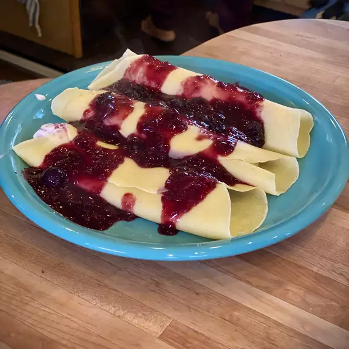

Crepes

Description
Really thin pancakes toped with fruit.
Ingredients
- 1 cup all-purpose flour
- 2 eggs
- 1/2 cup of milk
- 1/2 cup of water
- 1/4 teaspoon salt
- 2 tablespoons butter, melted
Directions
- In a large mixing bowl, whisk together the flour and the eggs.
Gradually add in the milk and water, stirring to combine.
Add the salt and butter; beat until smooth.
- Heat a lightly oiled griddle or frying pan over medium high heat.
Pour or scoop the batter onto the griddle, using approximately 1/4 cup for each crepe.
Tilt the pan with a circular motion so that the batter coats the surface evenly.
- Cook the crepe for about 2 minutes, until the bottom is light brown. Loosen with a spatula,
turn and cook the other side. Serve hot and top with fruit of your choosing
Return to Homepage